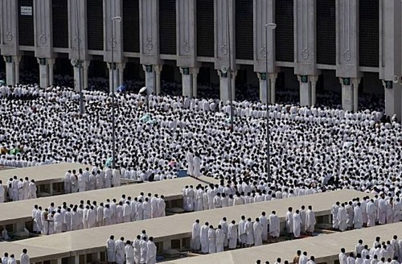
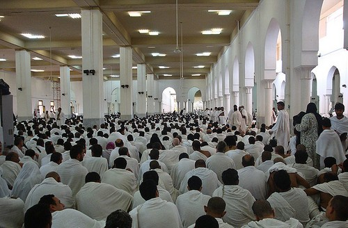

Syaikh Abdul Aziz Alu Syaikh, 34 Tahun Berturut-turut Khutbah di Arafah
Ibunya pernah mendoakannya, “Semoga Allah memberkahimu dan menjadikanmu memiliki peranan di dunia Islam”. ———————————————————————————–
Di antara rangkaian ibadah haji adalah berkumpulnya jamaah di Arafah. Mereka wukuf di sana, berdzikir mengagungkan Allah, berdoa, dan memohon ampunan kepada-Nya hingga matahari terbenam. Dahulu, Rasulullah shallallahu ‘alaihi wa sallam mengisi ibadah di Arafah dengan berkhutbah, memberi nasihat kepada para sahabatnya. Tempat beliau berkhutbah tersebut sekarang dibangun sebuah masjid yang diberi nama Masjid Namirah.
Sama halnya dengan apa yang dilakukan oleh Rasulullah shallallahu ‘alaihi wa sallam, umatnya saat ini pun mencontoh beliau dengan mengadakan khutbah di tempat yang sama, di Masjid Namirah.
Selama 34 tahun ini, jamaah haji di seluruh dunia menyaksikan sosok laki-laki yang sama, yang berkhutbah di Masjid Namirah pada hari Arafah, memberi nasihat kepada umat Islam dunia tentang agama mereka. Beliau adalah mufti agung Kerajaan Arab Saudi, Syaikh Abdul Aziz bin Abdullah alu Syaikh hafizhahullah.
Mengenal Masa Pertumbuhan Sang Mufti
Syaikh Abdul Aziz bin Abdullah alu Syaikh lahir di Kota Mekah pada tahun 1941. Dilihat dari sistim yang berlaku di kerajaan Arab Saudi, Syaikh Abdul Aziz berasal dari keluarga yang terpandang, keluarga yang dikenal dengan keshalehan dan keilmuan. Karena ia merupakan cucu dari Muhammad bin Abdul Wahab rahimahullah, seorang ulama yang turut memiliki andil besar mendirikan Kerajaan Arab Saudi.
Saat berusia 8 tahun, Syaikh Abdul Aziz kecil telah menjadi seorang anak yatim. Ayahnya wafat meninggalkannya. setelah itu, ibunya lah yang mendidik dan membesarkannya. Meskipun single parent, sang ibu berhasil mendidik putranya untuk menghafal Alquran. Abdul Aziz kecil berhasil menghafalkan kitab suci yang mulia itu pada saat berusia 11 tahun. Ibunya mendidiknya untuk cinta mendalami ilmu agama. Kemudian membina serta mendoakan sang anak agar menjadi pribadi yang mulia.
Saat beranjak remaja, Syaikh Abdul Aziz mulai mengalami gangguan pada penglihatannya. Sedikit demi sedikit pandangannya berkurang. Akhirnya nikmat melihat benar-benar hilang darinya secara total saat ia menyelesaikan pendidikan pasca sarjana dalam bidang dakwah di Universitas Muhammad bin Suud, Riyadh.
Di usia ke-19, Abdul Aziz Alu Syaikh mengenyam pendidikan di Fakultas Syariah Universitas Muhammad bin Suud. Di sana beliau memperoleh gelar pendidikan dalam bahasa Arab dan ilmu-ilmu syariat. Setelah itu, ia diangkat menjadi staf pengajar di lembaga-lembaga pendidikan di Riyadh dan di Fakultas Syariah, Universitas Muhammad bin Suud. Kemudian selama hampir seperempat abad menjabat sebagai imam dan khotib di Masjid Abdullah bin Imam Turki, Riyadh.
Doa Ibu Yang Menjadi Nyata
Tidak banyak yang tahu, ternyata salah satu yang sangat berperan dalam perjalanan kehidupan Syaikh Abdul Aziz Alu Syaikh adalah doa ibunya. Saat berusia 17 tahun, Syaikh Abdul Aziz remaja mulai mengalami gangguan penglihatan. Saat itulah ibunya menghiburnya, menasihatinya untuk bersabar dan tidak bersedih atas cobaan yang Allah berikan kepadanya. Ibunya berdoa, “Semoga Allah memberkahimu dan menjadikanmu memiliki peranan di dunia Islam”.
Doa sang ibu, seolah-olah menjadi tenaga ekstra yang memacu semangat belajar Abdul Aziz muda. Ketekunannya kian bertambah dan terus bertambah. Ia juga memiliki semangat yang luar biasa mendakwahkan dan membina umat di sekitarnya. Sampai akhirnya, doa sang ibu benar-benar terlihat, anaknya yang Allah cabut kenikmatan memandang ini berdiri di tengah umat Islam di seluruh dunia berkhutbah di ritual ibadah yang mulia di hari yang mulia. Ya, beliau menjadi khotib di Masjid Namirah di hari Arafah.
Syaikh Abdul Aziz yang kini berusia 73 tahun, pertama kali menyampaikan khutbah Arafah pada tahun 1402 H. Kemudian tugas tersebut terus beliau emban, bahkan selama mufti agung kerajaan dijabat oleh Syaikh Abdul Aziz bin Baz rahimahullah.
Tidak hanya menjadi khotib di Arafah, keajaiban doa sang ibu pun terus berlanjut. Anaknya yang ia doakan menjadi orang yang berperan dalam dakwah Islam ini diangkat menjadi mufti agung kerajaan menggantikan Syaikh Abdul Aziz bin Baz yang wafat pada 13 Mei 1999. Selain itu, beliau juga menyandang jabatan sebagai ketua dewan ulama senior dan komite fatwa Arab Saudi.
Jamaah haji mengerjakan shalat Zhuhur dan Ashar dengan jamak taqdim dan diqashar di Masjid Namirah
Pada saat hari Arafah kemarin, Syaikh Abdul Aziz bin Abdullah alu Syaikh mengatakan, “Saat ini, saya berdiri di suatu tempat dimana dahulu Rasulullah shallallahu ‘alaihi wa sallam berdiri memberi nasihat kepada para sahabatnya dalam haji wada’. Mencontoh sunnah beliau, saya mendapatkan sebuah amanah yang sangat besar. Memberikan khutbah di hari Arafah yang tidak hanya didengar oleh 3 juta jamaah haji, tetapi juga disaksikan oleh sekitar 1.5 milyar umat Islam di seluruh dunia”.
Dahulu, dari tempat yang sama, di Masjid Namirah, Rasulullah shallallahu ‘alaihi wa sallam berkhutbah di hadapan sekitar 100.000 orang sahabatnya pada haji wada’. Menasihati mereka tentang pokok-pokok ajaran Islam. Menasihati tentang mentauhidkan Allah dan berwasiat tentang ketakwaan. Karena takwa adalah parameter kemualiaan seseorang bukan yang lainnya.
Khutbah Arafah
Meskipun memiliki keilmuan yang mumpuni, Syaikh Abdul Aziz sama sekali tidak menganggap remeh tugas khotib Arafah yang dimanahkan kepadanya. Ia menyusun khutbah Arafah selama dua bulan. Setelah Ramadhan, ia menelaah semua khutbah yang disampaikan Rasulullah shallallahu ‘alaihi wa sallam pada haji wada’. Kemudian menghadapkannya dengan permasalahan-permasalahan kontemporer yang dihadapi oleh umat Islam masa kini. Lalu memfatwakan solusi ideal yang hendaknya ditempuh oleh kaum muslimin.
Satu bulan sebelum prosesi haji, di bulan Dzul Qa’dah, beliau mengadakan diskusi dengan para ulama senior lainnya tentang masalah-masalah kontemporer di dunia Islam. Beberapa hari sebelum prosesi haji dimulai, beliau –semoga Allah menjaganya- menghafalkan teks khutbah yang sudah ia susun. Kemudian mengulang-ulangnya beberapa kali. Diceritakan bahwa beliau sangat sedikit tidur menjelang khutbah Arafah dan tidak juga makan sebelum berkhutbah.
Jamaah haji dari berbagai penjuru negeri mendengarkan khutbah Arafah di Masjid Namirah
Saat berkhutbah, beliau benar-benar menghayati apa yang ia sampaikan. Demikian juga saat berdoa di hari mulia itu. Dengan penuh ketulusan beliau panjatkan doa untuk kebaikan umat Islam di seluruh dunia.
Dalam beberapa tahun terakhir, topik utama khutbah-khutbahnya fokus pada pemurnian ajaran Islam dan perbaikan umat Islam serta menjelaskan posisi tegas Islam melawan ekstremisme dan terorisme. Isu utama di dunia Islam semisal Palestina dan Suriah juga menjadi topik besar lainnya yang tidak luput dari perhatian beliau.
Beliau memberikan sebuah solusi bagi umat Islam menghadapi krisis ekonomi global, peringatan terhadap bahaya penyalahgunaan saluran televisi dan internet, khususnya bagi generasi muda. Tentu saja, solusi-soulusi dan nasihat-nasihatnya selalu ia ikuti dengan mengutip dalil-dalil dari Alquran dan hadits.
Semoga Allah senantiasa menjaga beliau di atas ketaatan. Dan semoga Allah memberikan kemanfaatan untuk umat Islam melalui dirinya.